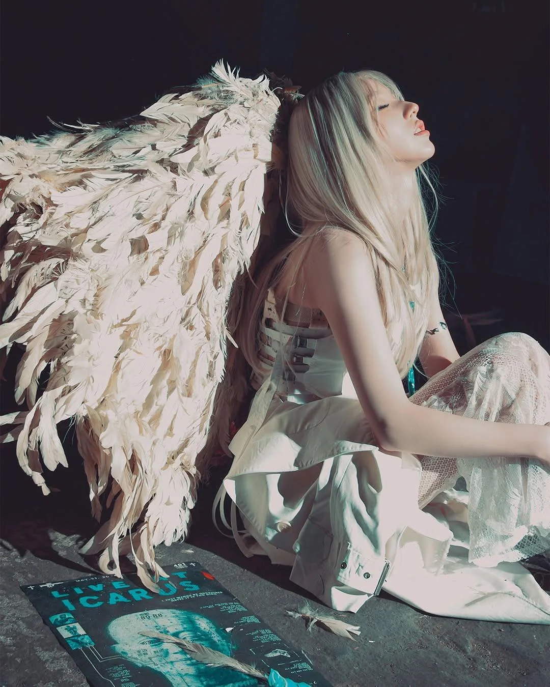

Quem é a HeeJin?
HeeJin, também conhecida como Jeon Hee-jin, é uma cantora e dançarina sul-coreana. Ela é integrante do ARTMS e foi a primeira integrante apresentada pelo LOONA.
HeeJin também possui carreira solo e é conhecida por sua participação em diferentes projetos musicais dentro do universo do grupo.